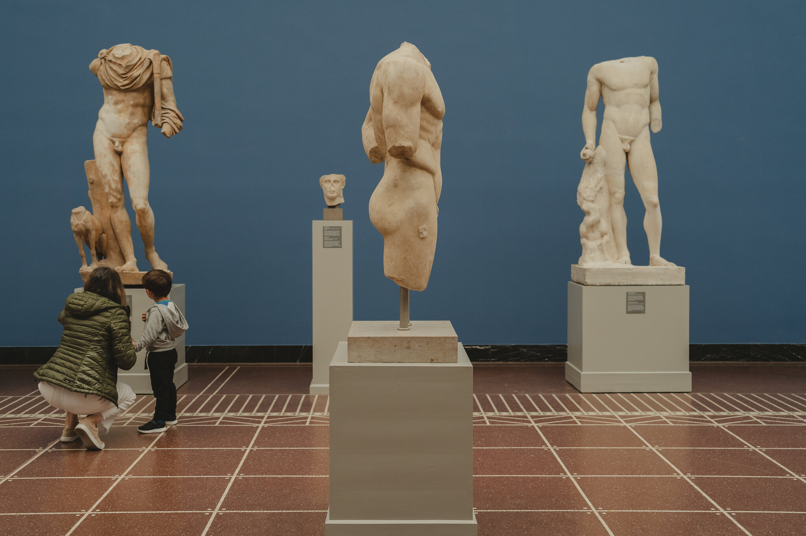

The Origin Museum Offers A Captivating journey Through Art, History, And Culture. Explore Our Diverse Collections
And Engaging Exhibitions That Inspire And Educate Visitors Of All Ages. Join Us

The origin museum opened in 2023 and has a wide variety of works of art, relics, extraordinary pieces and lots of events! With the support of Gonçalo Gonçalves, João Oliveira and Rui Rodrigues, it was possible to build such a large mast for the city of Barcelos and for Portugal.
Stay up to date with all our news and updates!
A hands-on workshop where participants can learn and practice impressionist painting techniques, guided by a local artist.
Time: 14:00 - 16:00
Art Workshop Room
A hands-on workshop where participants can learn and practice impressionist painting techniques, guided by a local artist.
Time: 14:00 - 16:00
Art Workshop Room
A guided tour of the dinosaur fossil exhibits, with detailed explanations about the species displayed and the fossilization process.
Time: 10:00 - 11:30
Location: Paleontology Gallery